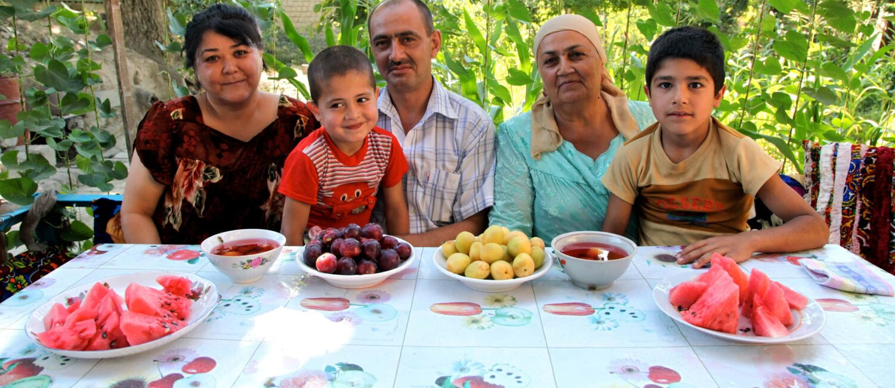
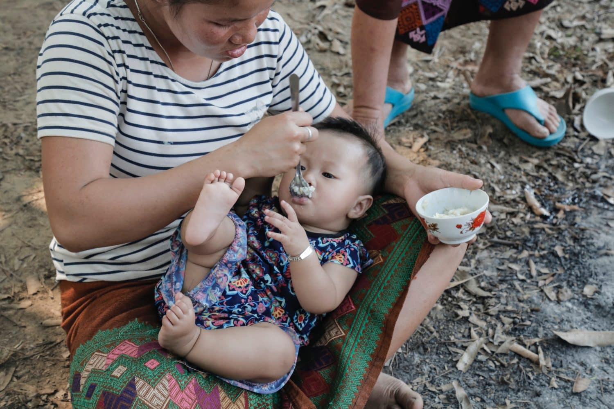
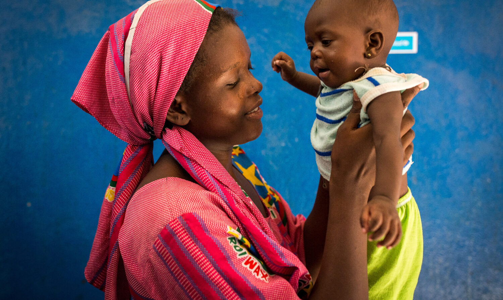

| No | Nama Anak | Tanggal Lahir | Jenis Kelamin | Berat Badan (kg) | Tinggi Badan (cm) | Tanggal Pengukuran | Berat Badan Ideal (kg) | Status Gizi |
|---|---|---|---|---|---|---|---|---|
| 1 | Kenzo Wynter | 01/01/2018 | Laki-laki | 15 | 90 | 01/10/2023 | 18 | Normal |
| 2 | Allyn | 03/05/2019 | Perempuan | 12 | 85 | 01/10/2023 | 15 | Gizi Kurang |
| 3 | Diego S Emilo | 06/12/2020 | Laki-laki | 10 | 80 | 01/10/2023 | 12 | Gizi Buruk |
| 4 | Kharisma Singht | 09/20/2021 | Perempuan | 11 | 88 | 01/10/2023 | 14 | Kurang Gizi |
Gizi yang seimbang sangat penting bagi pertumbuhan dan perkembangan anak-anak. Nutrisi yang cukup membantu memastikan bahwa anak-anak memiliki energi yang dibutuhkan untuk bermain, belajar, dan tumbuh dengan baik. Beberapa nutrisi penting untuk kesehatan anak meliputi:
Sebagai orang tua, penting untuk memastikan anak-anak Anda mendapatkan makanan yang seimbang dan bergizi setiap hari. Juga, pastikan anak-anak Anda cukup minum air dan menjaga pola makan yang sehat untuk mendukung kesehatan mereka.
Ada beberapa makanan sehat yang dapat Anda sertakan dalam diet anak-anak untuk mendukung pertumbuhan dan kesehatan mereka:
Ingatlah bahwa mendidik anak-anak tentang pentingnya makan sehat juga merupakan bagian penting dari mempromosikan gaya hidup yang sehat. Melibatkan mereka dalam memilih makanan, memasak bersama, dan memberikan contoh dengan memakan makanan sehat dapat membantu mereka mengembangkan kebiasaan yang baik.
Terakhir, pastikan anak Anda memiliki waktu yang cukup untuk bermain dan beraktivitas fisik. Aktivitas fisik juga merupakan komponen penting dalam pertumbuhan dan kesehatan anak-anak.
Berikut adalah beberapa artikel mengenai gizi untuk anak-anak:
  